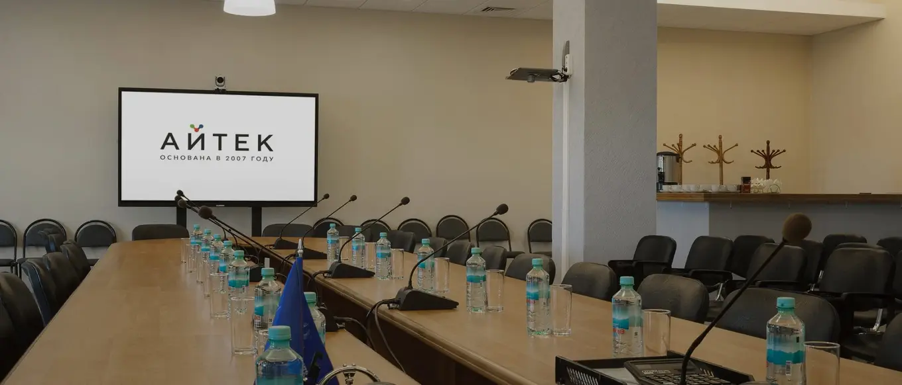

Сеть гостиничных комплексов Art Family
Москва · 20 рабочих дней
Комплексное оснащение переговорного зала в городе Киров

Стоимость и срок указаны для этого объекта. Смета нового проекта зависит от помещения, комплектации и состава работ.
Помещение оснастили для производственных совещаний, презентаций, обучения и видеоконференций.
Перед ГК Айтек требовалось выполнить полное комплексное оснащение зала переговоров для проведения обучающих мероприятий (в том числе для обучения школьников основам профессиональной деятельности по востребованным на производстве специальностям), презентаций, производственных совещаний и видеоконференций.
Специалистами ГК Айтек был успешно завершён проект по комплексному оснащению объекта современным мультимедийным оборудованием под ключ. В ходе реализации проекта был произведён весь спектр работ — от поставки оборудования и разработки проектной документации до финальной отладки систем. Состав реализованного комплекса: Интерактивная сенсорная панель 86" Дополнительные индивидуальные мониторы 24", дублирующие изображение главного экрана Звуковые врезные потолочные системы Конференц-система для интерактивного взаимодействия во время семинаров и групповых сессий Камера захвата с умным наведением на активного спикера Скрытая многоуровневая коммутация Централизованное управление всем оборудованием с единого пульта
Основной системой отображения служит интерактивная видеопанель со встраиваемым в неё компьютером. На этом компьютере демонстрируются обучающие материалы в интерактивном формате, а также запускаются программы для ВКС: Skype, Zoom и пр. Видеопанель монтируется на подвижной напольной стойке. Для удобства пользователя предусмотрены беспроводная клавиатура и мышь.
Видеосъёмка и передача изображения участников мероприятия в программу для ВКС осуществляется посредством видеокамеры панорамирования/наклона/масштабирования с 30-кратным увеличением. Имеется система беспроводного подключения к системе видеоотображения ноутбуков, планшетов и смартфонов.
Конференц-система обеспечивает каждого из участников мероприятия персональным управляемым микрофоном и передаёт их речь в программу для ВКС.
Система озвучания позволяет транслировать в помещении речь участников, речь удалённых абонентов в ВКС, а также звуковые дорожки демонстрируемых видеоматериалов.
Вся система управляется при помощи индивидуально разработанного интуитивно понятного пользовательского интерфейса, реализуемого на планшетном ПК iPad. Для стабильности проведения ВКС и защиты оборудования от перепадов напряжения предусмотрен источник бесперебойного питания.
В бриф перейдут выбранный проект, тип помещения и бюджет примера. Все параметры можно изменить.